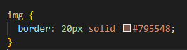
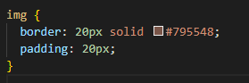
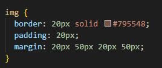

Below are two pictures of beaches (This is our content)
Imagine that these are photos that you took and you want to hang them on your wall in your room.
(Your wall being this blog page)
It looks a bit amature as a photographer to just blue tack them next to each other on the wall...
They could probably do with a frame??
How about we add one. (Frame being a border)
I did this by running the following code in my css file:
Having a photo sitting in a frame looks as if there is no love given to your amazing photographs.
I'm going to add a mat to my frame (padding)
This can be achieved by adding padding to img element:
This is starting to look much better, but I would never put two framed photos so close to each other on a wall.
I would add a bit of space (margin) between them so they're not so cluttered.
And finally to get this style, I set margin top and bottom to 20px, and margin left and right to 50px.
Now each photograph stands out in its own right!